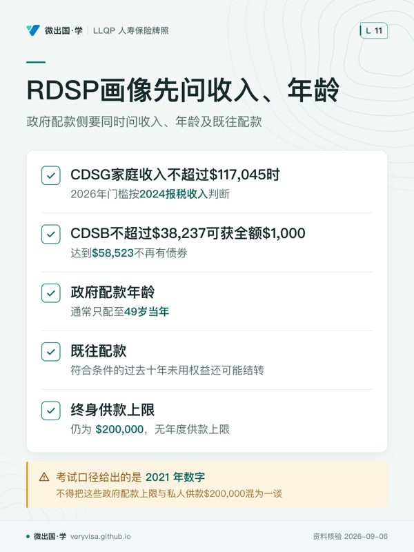

核实日期：2026-09-05｜本页现行数字的出处：EI 病假福利（Government of Canada (ESDC)）、CPP 伤残给付金额（Government of Canada (ESDC)）、WorkSafeBC 工资损失给付（WorkSafeBC）、BC MSP（BC 省政府）。 复核周期：2026-10-10（先核 EI 临时措施窗口；年度数字另在2027年1月复查）。EI 与 CPP-D 的金额每年调整；RDSP 供款上限、EI 600小时门槛、WorkSafeBC年度上限、自雇者EI注册细则、EI家庭补充资格线、RDSP配款与追回规则均已回源。
0. 这一篇解决什么问题
你要考的是 意外与疾病保险模块（Accident and Sickness Insurance），本篇对应 CISRO 能力组件 c1「评估客户需求与处境」，占本模块 35%——是全模块四个能力组件里权重最大的一块，比排第二的「分析可用产品」（c2，30%）还要重。本章先把家庭现金流、现有保障和健康资料问全，再进入产品比较；考纲权重不能当作销售错误成因的统计。
这一篇讲的不是「伤残险怎么赔」（那是本模块另一篇专讲的内容，这里不重复），而是代理人在建议任何产品之前，必须先把哪些数字问出来、按什么顺序拼起来、最后得出「缺不缺、缺多少」这个结论。学完这一篇，你应该能做三件事：① 拿出一张客户画像信息清单，知道每一类字段是为了回答哪个后续问题；② 给定一组收入、支出与既有保障数字，一步步算出税后收入替代率与保障缺口；③ 判断自雇者与雇员在同一张清单上要填的内容有什么系统性不同。
一、制度设计与底层逻辑：为什么「评估客户需求」占了模块权重的三分之一
1. 客户画像不是问卷，是给风险定价前的证据链
伤残险的核保与需求测算都建立在一个前提上：客户当下的收入、负债与既有保障是可验证的事实，不是客户自己的印象。代理人收集的不是「客户觉得自己缺多少」，而是能拿报税表、工资单、团体福利手册、净资产清单逐项对上的证据。这条底层逻辑决定了客户画像的每一个字段都要能回答一个后续问题——问不出用途的字段不该问，问不到证据的数字不该用。
由此产生本章的第一条纪律：画像先于推荐，推荐先于合同。跳过画像直接推荐产品，是代理人执业风险最集中的一类失误——监管方审查投诉时，第一个要看的文件往往就是这份画像记录有没有做全、做实。
2. 客户画像信息清单：九个板块，每一格都对应一个后续判断
| 板块 | 具体字段（举例） | 为什么要问 |
|---|---|---|
| 个人 | 年龄、性别、运动 / 爱好、婚姻状况 | 年龄影响核保费率与未来购买权（FPO）额度；高风险运动可能触发除外或加费 |
| 家庭 | 配偶、子女、其他受抚养家人 | 决定需求测算的分母：单身客户按个人收入全额计算，双职家庭可能部分由配偶收入替代 |
| 职业与收入 | 职责内容、工作年限、未来职业规划；工资 / 奖金 / 佣金 / 营业收入 | 可保收入的计算基础不同（雇员按 T4 工资单，自雇者按净经营收入），职业本身决定核保分级 |
| 资产负债 | 房贷、信用卡、HELOC、税务负债、储蓄与投资（含 RDSP） | 判断客户能否自我承担短期收入中断（净资产表）；负债结构决定「必须覆盖」的底线 |
| 现有保障（团体） | 雇主提供的 STD/LTD 比例、给付期、残疾定义级别、抵消条款 | 决定还剩多少缺口，也决定个人险是否会被主合同计入全来源上限池 |
| 现有保障（个人） | 已购 DI / CI / 人寿的保额、定义、续保等级 | 避免重复推荐或漏算已有保障，判断是否该转换或增购 |
| 现有保障（政府） | EI 资格与预期给付、CPP-D 申请可能性、WorkSafeBC 是否适用 | 政府给付是团体主合同定义的「直接来源」，会计入抵消池，且需先分工伤 / 非工伤两条路径 |
| 健康与生活方式 | 个人病史、家族病史、吸烟、高风险运动 | 核保定价与除外条款的直接依据，也影响客户对等待期长短的真实承受力 |
| 目标 | 退休计划、海外居住意愿、子女教育安排 | 影响给付期该设多久、储蓄类产品要不要同步安排 |
ℹ️
「实物收入」也是收入的一种
考试口径把「居家照护者的替代价值」「社区互助项目」这类不直接产生现金但实际替代了开支的贡献，单独列为一类收入（in-kind income）。一位全职照顾家庭的配偶如果因意外失能，家庭要另花钱雇人顶替她的家务与照护工作——这笔隐性成本在做需求测算时经常被完全漏掉。
3. 自雇者与雇员：同一张清单，答案系统性不同

| 维度 | 雇员 | 自雇者 |
|---|---|---|
| 可保收入计算基础 | T4 工资单：工资 + 奖金 + 佣金 | 先核劳动性净经营收入；持续租金、股息或信托另列为其他资源，不直接相加提高可保劳动收入 |
| 收入证明文件 | 最近数月工资单 + T4 | 近两三年报税表 T1 / 财务报表（收入波动大的行业尤其需要多年平均） |
| 团体保障 | 通常有雇主提供的 STD/LTD 垫底 | 通常没有，个人 DI 往往是唯一的收入保障来源 |
| EI 资格 | 须同时核受保工时、收入减损、医学证明与若非病伤本可工作的条件 | 默认不参加 EI 特别福利，须通过 MSCA 自愿注册协议，协议生效满 12 个月后才具备申领资格（等待期从注册日起算，不是从失能发生日起算）；注册后 60 天内可无条件撤回且不必缴保费，一旦已经领取过特别福利即终身不可撤回；申领需满足上一年度净自雇收入门槛，官网现行公布值为 2025 年度 $9,254（用于 2026 年申领资格，2026-09 查官网未另行公布 2026 年度专属数字） |
| 等待期选择 | 可以选较长等待期（如 120 天），因为前面有团体 STD 垫着 | 等待期就是他必须靠自己现金流扛过去的那段时间，选择通常更保守 |
| 全来源上限 | 受雇主主合同约束，个人险是否计入看主合同措辞 | 没有团体主合同，通常不受 85% 上限约束（除非另买了商业贷款保护险等） |
| 额外风险敞口 | 不适用 | 同时暴露「个人收入中断」与「企业固定开支照旧」两个敞口，往往需要 DI + 营业费用险（BOE）两份保单 |
二、2026 现行政策与数字：考试口径写的和柜台用的不是一回事
客户画像这一章大量引用政府给付项目的具体数字，而这些数字每年都在动——这也是本模块考试口径过期密度第二高的一章（EI/CPP-D/WorkSafeBC 的具体数字全部在此，且考试口径自带 2021/2022 年份）。
1. 三列双口径表：EI 病假周数在画像里的位置
| 考试口径 2022（ch06 §6.5.2.1）说 | 2026 现行 | 考场答 · 柜台做 | |
|---|---|---|---|
| 病假给付最长周数 | 15 周（当时通常有1周等待期；现行临时措施另列） | 26 周（2022-12-18 起 Bill C-30 生效，Government of Canada (ESDC)） | 柜台画客户的收入中断时间轴时统一用 26 周去估算「政府给付窗口有多长」；考试按指定考试口径版本与题干；实务26周是最高期限，仍核个案资格 |
| 替代比例与周上限 | 55%，2022 年周上限约 $638 | 55%，2026 现行周上限 $729（Government of Canada (ESDC)） | 柜台用 $729；具体金额在考场很少单独出题，遇到就用题干给定值 |
| 家庭补充资格线（家庭年收入门槛） | 考试口径给出 2022 年值约 $25,921 | $25,921（官网现行页仍为此值，2026-09 回源确认未见上调） | 这是本课罕见的「考试口径数字仍现行」案例：另需家有 18 岁以下子女、本人或配偶领取加拿大儿童福利金（CCB），补充部分自动叠加发放 |
| 资格门槛（工时 / 收入减损） | 考试口径所列420小时是旧口径 | 600受保小时；至少一周正常周收入减少超过40%，且因医学原因不能工作 | 资格期为前52周或上次申领以来较短者；医疗证明等条件另核（canada.ca） |
✕
「EI 是第二付款人」不等于「EI 一定能领到」
团体计划的给付比例如果已经高于 EI 55% 的替代比例（尤其是叠加 $729/周上限之后），EI 在实际发放中可能一分钱都拿不到——不是「EI 会补一点」，而是团体给付本身已经封顶了 EI 所能给的部分。画像时不能想当然地把 EI 算成一笔额外收入，要先比较两者的实际给付水平。
2. 政府给付侧的 2026 现行数字快照
| 项目 | 2026 现行值 | 出处 | 考试口径怎么写 |
|---|---|---|---|
| CPP 伤残给付（CPP-D）最高月给付 | $1,741.20/月 | Government of Canada (ESDC)（2026-09-04 抓取） | 考试口径只讲 severe and prolonged 的判定机制，未给金额，属纯补充 |
| CPP-D 新受益人平均月给付 | $1,234.68/月（ESDC金额页所列2025年10月新受益人快照，Government of Canada (ESDC)） | Government of Canada (ESDC) | 同上 |
| WorkSafeBC 工资损失给付 | 约为计算后净收入的 90% | WorkSafeBC（2026-09-04 抓取） | 考试口径只给全国笼统区间「税前净收入 80–90%」，从未点名任何一省的机构 |
| WorkSafeBC 工资计算上限 | $127,500/年，2026-01-01 生效；不是直接给付额 | worksafebc.com | 官方年度决定已核 |
| BC MSP | 覆盖「医疗必要的医生服务」，牙科仅限医院内口腔手术等极少数情形 | BC 省政府（2026-09-04 抓取） | 考试口径全书零次提及 MSP |
CPP-D 须同时满足年龄、缴费和医学条件。「严重」指伤残使人经常不能从事实质有收益的工作；「持久」指长期、期限不确定或很可能致死，不要求绝对没有任何有报酬活动。通常从认定严重且持久伤残开始四个月后起付，起日和金额看ESDC决定书；不能把事故日、诊断日或最高月额自动当作获批依据。CPP与QPP规则应分别核实。
3. RDSP：考试口径给出的是 2021 年数字
注册残疾储蓄计划（Registered Disability Savings Plan，RDSP）用于符合 DTC 等条件者的长期储蓄。CRA 现行指南确认：终身供款上限仍为 $200,000，无年度供款上限，可供至受益人 59 岁当年末；一般新开户也以未满60岁为界，同一受益人的计划转移有例外。供款不抵税，投资收益在计划内递延纳税；取出时私人供款部分不计收入，政府配款、rollover及投资收益部分计收入。不要把「59岁前申请」与「59岁当年仍可办理」混为一谈。canada.ca
政府配款侧要同时问收入、年龄及既往配款。ESDC公布2026年门槛按2024报税收入判断：CDSG在家庭收入不超过$117,045时，首$500配3:1、次$1,000配2:1，常规年最高$3,500；超过该门槛则首$1,000配1:1。CDSB无需供款，收入不超过$38,237可获全额$1,000，介于$38,237与$58,523间递减，达到$58,523不再有债券。CDSG终身最高$70,000、CDSB终身$20,000，通常只配至49岁当年；符合条件的过去十年未用权益还可能结转，grant某年可达$10,500。不得把这些政府配款上限与私人供款$200,000混为一谈。
提款则另核协助保留金额（AHA）：普通情形按每取$1追回最多$3政府配款并以适用AHA为限，但年龄、失去DTC及指定短寿命安排可能改变追回规则。先取开户机构的配款历史和正式提款试算，再把可用净额放进家庭现金流，不能把所有提款都概括为必追回过去十年款项。
ℹ️
考试口径里的一些统计数字纯粹是背景陈述，不必较真
例如考试口径引用 2010 年 Bank of Canada 研究「加拿大成年人 80% 持有至少一张信用卡」，这类数字用来说明负债结构的普遍性，机制性描述长青，但数字本身已经陈旧，画像时不需要拿它去核对客户的真实情况。
三、实务流程：从事实发现到缺口结论
1. 收入法 vs 支出法：两把尺子，怎么选
测算 DI 需求有两种常用方法，考试口径称为 income approach（收入法）与 expense approach（expense approach，支出法）：收入法按税前收入的固定比例（常见 60%）测算，给出的通常是一个偏高、标准化的数字；支出法按客户实际生活开支逐项测算，给出的数字往往更低、也更贴近客户当下能负担的保费预算。两者常常给出不同结论，这不是哪一个算错了，而是它们回答的问题本来就不一样：收入法回答「维持原有生活水准大致需要多少」，支出法回答「不至于崩溃的最低限度是多少」。代理人的取舍标准是可负担性——如果收入法给出的保费超出客户预算，不是放弃投保,而是改用支出法先确保底线,再随收入增长逐步补足。
2. 缺口计算逐步算例一：税后收入替代率
列治文注册护士 Lena，税前年薪 $72,000，即税前月收入 $6,000。她的团体 LTD 比例是月薪的 60%，保费由雇主全额支付（因此给付需要缴税）。假设工资与本例LTD各自的有效税负均为25%（示例，仅作教学演示，非精确报税结果）。
- 税后月收入 ＝ $6,000 × (1 − 25%) ＝ $4,500
- 团体 LTD 名义给付 ＝ 60% × $6,000 ＝ $3,600（应税）
- 给付到手 ＝ $3,600 × (1 − 25%) ＝ $2,700
- 税后收入替代率 ＝ $2,700 ÷ $4,500 ＝ 60%
这是本节最容易被误判的一步：很多人以为伤残险给付一般免税，所以「60% 的保额」落到手上会接近税后收入的 80% 左右——那条经验值只适用于免税给付（例如员工自付保费的团体 LTD，或个人自购的 DI）。当保费由雇主支付、给付本身要缴税时，只有在本例两项有效税负同为25%的假设下，税后替代率才与名义比例相同；实际全年收入、扣除和抵免不同，税率也可能不同，不会因为「伤残险通常免税」这句话而自动升高。判断的第一步永远是先确认这份保单的保费是谁付的，再决定给付要不要缴税，最后才能算出真实的税后替代率。
3. 缺口计算逐步算例二：团体 LTD + EI + CPP-D 之后还缺多少
素里电信技术员 Owen，税前月薪$6,000、最低家庭生活需要$4,500/月。本例假定已过LTD等待期，员工全额自付保费的LTD名义给付为50%，即免税$3,000/月，且实际合同会逐元抵消CPP-D，再核85%全来源上限。EI是否可领须按ESDC规则独立判断；下例假设该期间无EI给付，不能仅凭$3,000月额与$729周额比较就推导为零。
考试口径与现行口径：考试口径（2022 年版）§6.5.2.2 的起付表述指伤残月份之后的第四个月，并不是把伤残当月算作首月后从第四个月起领；现行 ESDC 页也写认定严重且持久伤残开始四个月后起付。此处是原讲解对月份的误读，未发现这项 CPP 规则的考试口径／现行冲突。考试按指定考试口径和题干，实务按 ESDC 决定书核资格及起付日，QPP 须另核。（考试口径定位：§6.5.2.2；考试口径版本入口；ESDC 现行页，canada.ca）
第一阶段（已过LTD等待期、CPP-D尚未起付）： - LTD到手：$6,000×50%=$3,000/月。 - 每月缺口：$4,500−$3,000=$1,500。 - 在更早的LTD等待期内，另需按STD、EI资格及储备算缺口，不能由此表假定伤残第一天就有LTD。
第二阶段（CPP-D获批并按决定书起付）： - 仅为算术演示，假定CPP-D每月为$1,234.68；此数与官方2025年10月平均快照相同，不代表Owen应获这个数。 - 先按本例合同直接抵消：LTD=$3,000−$1,234.68=$1,765.32。 - CPP-D属应税收入；假定其有效税负25%，净额=$926.01。 - 到手合计=$1,765.32+$926.01=$2,691.33；低于85%上限不表示可取消已经适用的直接抵消。 - 每月缺口=$4,500−$2,691.33=$1,808.67。
这个例子说明，多一个给付来源并不保证税后缺口缩小。若合同不直接抵消CPP-D，结果会不同；但CPP-D税前金额仍不能直接与免税LTD相加后称为到手收入。方案应分别展示等待期、LTD起付、政府待遇获批及定义切换后的净额，按实际缺口、可保额度和储备选择组合，不能只用最高金额或长期平均值作承诺。
4. 净资产表与现金流量表：两张财务快照，各回答不同的问题
净资产表（net worth statement）＝资产（按公允市值）减负债，回答的是「客户能不能靠自己扛过一段收入中断或一笔医疗急支」；现金流量表（cash flow statement）＝净收入减支出按月追踪，回答的是「客户每月有没有余钱付保费、有哪些开支可以削减」。两者在客户画像里各司其职：净资产表判断的是自我承担能力，现金流量表判断的是保费可负担性，不能用其中一张替代另一张的结论。
5. 画像做完之后：四种情形的判定
客户画像收集完成后，代理人要把「现有保障」与「测算需求」放在一起比对，通常会落入四种情形之一：
| 情形 | 判定标准 | 代理人该做什么 |
|---|---|---|
| 保障充足（adequate） | 现有保障到手金额 ≥ 测算需求，且未超全来源上限 | 记录在案，定期复查（收入或负债变化时重新评估） |
| 保障过剩（excess） | 现有保障明显超出实际需求 | 提醒客户可能在为用不上的保额付保费，评估是否调整 |
| 重叠超全来源上限（overlap exceeding all-source maximum） | 各来源加总超过主合同约定的上限（常见 85%），先付人规则下团体那一份会被削减 | 说明客户实际到手会低于名义总额，避免客户以为「买得越多越保险」 |
| 缺口（gap） | 现有保障到手金额 < 测算需求 | 建议个人 DI 补足，且要按时间轴上最大的那段缺口定保额，不能只看稳定态 |
保单交付时的审阅退保期及适用的生效条件，属于把这份画像结论落成合同之后的下一步，留到推荐与合同专篇细讲，这里不重复。
🔧
EI 临时窗口
对2025-03-30至2026-10-10开始的新申领，EI 临时免等待期。雇主保费减免计划的 STD 最低给付期限仍为15周；两者须分别核对，不能从病假26周反推团体方案条件。canada.ca Government of Canada (ESDC)
四、2026 市场：把职业与收入画像变成可核对的投保问题
以下是 2026-09-04 回读官网确认的产品实例。各行说明它对应本章的哪个判断；实际销售资格和责任范围仍须核对具体合同。
| 公司与产品线 | 对应本章的判断与使用边界 | 官网出处 |
|---|---|---|
| RBC Insurance · RBC Simplified Disability Insurance | 官网将自雇、合同工、兼职或季节工列为目标群体。画像首先核实工时、收入稳定性、既有团体保障，再检查客户选的是意外保障还是加上疾病保障。免体检不等于没有资格条件。 | RBC Insurance |
| Canada Life · Lifestyle Protection plan | 公司持有人要分清自己以雇员还是股东身份参加安排。官网的 WLRP 示例提醒我们：公司出钱购买的保障，税务处理可能与个人以税后资金付款不同。 | Canada Life |
| iA Financial Group · Superior Program | 官网按收入与职业类别区分承保，且可涉及营业费用。合同工、餐饮小业主或地产经纪的实际工作内容、收入证明与固定成本，比职业头衔更有判断价值。 | iA Financial Group |
给收入波动大的客户做画像时，先取得保险人要求期间的报税资料和现有计划说明，再分别列出家庭最低支出、企业固定开支及可动用储备。不要把营业额当个人收入，也不要把某一家要求的资料年数写成所有公司的统一规定。
如果客户已有工伤、行业协会或雇主保障，须核对承保事件、给付定义和抵消条款。自雇并不表示个人 DI 是唯一可能的保障来源；同样，有团体险也不能直接推出个人保障缺口为零。
可交付给客户的是一张缺口表：什么事件会断收入，现有方案何时开始付、付多久，未被覆盖的那部分如何处理。产品比较应沿着这张表进行。
五、历史变革：这一章为什么现在必须重写
其一，EI 病假从 15 周延到 26 周（2022-12-18）。 这是本模块最大的一处考试口径过期，本章受影响的程度不亚于伤残险产品那一篇——因为客户画像里的收入中断时间轴，直接决定代理人建议的个人 DI 该覆盖哪一段窗口。用旧的 15 周去估算，会把已经缩短的政府给付空档算得过大，反过来建议了不必要的保额或不必要的等待期长度。
其二，考试口径的政府给付数字全线滞后。 考试口径给的 EI 周上限是 2022 年的 $638，现行是 $729；CPP-D 考试口径干脆没给金额，现行最高 $1,741.20，新受益人平均 $1,234.68。RDSP 终身供款上限考试口径停在 2021 年的 $200,000。这类数字每年或不定期调整，本库的处理方式是：结论落在机制上，数值只作当年快照并挂复核日期。
其三，考试口径从未点名 BC 的机构。 考试口径全书用 "provincial agencies""government website" 这类泛称,从未出现 WorkSafeBC 一词,也从未出现 MSP 三个字母。这不是考试口径写错了,是它按全国通则写;但对一个在 BC 执业的代理人来说,客户问的永远是 WorkSafeBC 和 MSP 具体覆盖什么。
六、案例：三个最容易在柜台上说错的画像场景
案例 A：单身客户与双职家庭，同一套收入却不该套同一个保额
素里的 Henri，单身，税前月薪 $5,000，无配偶收入可分担。按收入法（60%）测算,他的 DI 需求是 $3,000/月,且这个数字几乎没有可以打折的空间——一旦失能,家里没有第二份收入托底。
高贵林的 Jacques 与配偶 Marie，双职家庭，Jacques 税前月薪同为 $5,000，Marie 名下另有稳定收入。理论上 Jacques 失能时家庭仍有 Marie 的收入部分覆盖，缺口测算结果可能只有 $1,000/月，远低于 Henri 的 $3,000/月。
适用规则：收入法给出的是理论替代额，但家庭结构会改变实际需要补的那一份。结果：Jacques 一家理论上可以少买一些保额。常见错法：直接照抄理论缺口投保，完全不留余量——考试口径特别提醒，Marie 未来仍可能因为要照护失能的 Jacques 而暂停工作，理论上的「配偶收入托底」到时候可能自己先打了折扣。所以双职家庭的缺口测算要在理论值上留出余量，而不是机械按缺口数字投保。
案例 B：同一起事故，两种判定结果——CPP-D 的「严重且持久」
两名在素里同一建筑工地共同受伤的工友，Devon 与 Marcus，都申请了 CPP 伤残给付。Devon 神经损伤导致手部灵活度下降，但医生证明他仍能胜任坐姿的质检类工作；Marcus 脊髓损伤导致完全丧失行走与手部精细动作能力，医生证明他无法从事任何有报酬的工作，且状况预期长期持续。
适用规则：本例还须假定两人年龄及缴费合格。ESDC按严重且持久标准及个人情况评估；Marcus的医学证据可能支持申请，不能由伤情描述直接保证获批。Devon能够工作的性质、经常性及实质收入也须核，不能只因存在任意有报酬工作就判失败。WorkSafeBC受理与CPP-D资格是不同制度，可能并行申请，但实际金额还须核协调规则。
案例 C：同一位客户，两把尺子给出两个数字
本拿比的自由译者 Sofia，收入按项目计，波动较大。用收入法（按近三年平均净经营收入的 60%）测算，DI 需求是 $3,000/月；用支出法（按她实际的房租、日常开销、税务预留）测算，只需要 $2,000/月。
适用规则：两种方法本来就回答不同的问题，不存在「哪个算错了」。结果：如果 Sofia 的预算只能负担 $2,000/月对应的保费，先按支出法投保，把 $3,000/月留作未来收入上升后用未来购买权（FPO）逐步补足的目标。常见错法：代理人只报收入法算出的「标准答案」，客户一看保费超预算直接放弃投保——支出法给出的是一个「预算内、但仍守住底线」的方案，不是退而求其次的将就，而是需求分析方法论里本该有的另一半。
七、考试陷阱与双口径清单
以下每条对应 CISRO 公开样题中本章相关题目的考点与陷阱形态，按版权边界只写形态，不复述题干。
-
净收入 vs 毛收入混淆（陷阱形态：口径替换）。计算可保收入、税后替代率时，题干给的是税前还是税后收入必须先看清楚，套错口径会让答案差出一大截。识别方法：先确认题干给的数字是 gross 还是 net，再套对应公式。
-
团体险不是自己的（陷阱形态：所有权误解）。团体保单是雇主持有的主合同，员工只是被保险人，不是投保人；离职即失去这份保障，除非在窗口期内行使转换权。客户以为「我在职时享有的保障会一直跟着我」是常见误判。
-
忘了政府给付也要抵消（陷阱形态：漏抵消）。CPP-D、EI（团体计划视角下）、WorkSafeBC 都是主合同定义的「直接来源」，会计入全来源上限池，不是可以直接加总的「白得的钱」。
-
自雇者用总收入而非净经营收入报可保收入（陷阱形态：漏算一步）。先以收入减经营支出核劳动性净收入，持续投资性收入另评对需要和核保额度的影响，不能漏减开支或直接加投资收入提高可保额。
-
收入法与支出法两个数字用混（陷阱形态：方法混用）。题干若要求「标准核保比例」用收入法，若要求「预算内的最低方案」用支出法，两者不能互换套用。
-
净资产表当成需求测算的替代品（陷阱形态：工具误用）。净资产表回答的是客户能不能自我承担，不是该买多少保额；现金流量表回答的是每月能否负担保费——三个问题不能用同一份文件回答。
-
EI 用了考试口径的 15 周而没意识到现行 26 周（陷阱形态：考试口径过期）。用旧周数估算收入中断时间轴，会把已经缩短的政府给付空档算得过大。
-
CPP-D 自动等同「获批」（陷阱形态：假设过强）。画像阶段只能把 CPP-D 列为「申请中 / 待定」的收入来源，不能未审批就当成稳定收入基础去做承诺——Devon 与 Marcus 的对照案例正说明「严重且持久」并非人人都能通过。
双口径清单（考场 vs 柜台）：① EI 病假周数——考场看题干 / 考试口径 15 周，柜台 26 周；② EI 家庭补充与资格门槛的具体数字——考试口径 2022 年值不作数，柜台一律回官方页核实；③ 团体 LTD 给付要不要缴税——取决于保费谁付，不能一概而论「伤残险给付通常免税」；④ RDSP 终身供款上限——考试口径 2021 年值 $200,000，CRA现行页已确认仍为$200,000，柜台以官方现行页为准。
边学边测：本章题库共 42，覆盖三层难度与至少三道情景算数题。
术语双语表
| en | zh | 一句机制 |
|---|---|---|
| client profile | 客户画像 | 个人处境、财务处境、保险处境三大板块合成的证据链 |
| fact-find（fact-finding interview） | 事实发现面谈 | 代理人系统采集客户上述字段的谈话流程，是推荐产品前的必经步骤 |
| income approach | 收入法（DI 需求测算） | 按税前收入固定比例（常 60%）测算，给出偏标准化、通常偏高的数字 |
| expense approach | 支出法（DI 需求测算） | 按实际生活开支逐项测算，给出更贴近预算但也更保守的数字 |
| net worth statement | 净资产表 | 资产（按公允市值）减负债，判断能否自我承担收入中断 |
| cash flow statement | 现金流量表 | 净收入减支出按月追踪，判断有没有余钱付保费 |
| earned income | 劳动所得 | 工资、奖金、佣金与营业收入，是可保收入的主体部分 |
| unearned income | 非劳动所得 | 配偶收入、投资收入、赡养费、养老金、既有伤残给付等，不因失能而必然中断 |
| in-kind income | 实物 / 替代性收入 | 未产生现金但实际替代了开支的贡献，如全职照护者的家务价值 |
| emergency fund | 应急基金 | 客户自有的短期收入中断缓冲，用于对照等待期长度是否合适 |
| Registered Disability Savings Plan（RDSP） | 注册残疾储蓄计划 | 面向 DTC 资格者的税延储蓄计划，考试口径给出的终身供款上限为 2021 年值 |
| Disability Tax Credit（DTC） | 残疾税收抵免 | RDSP 资格的前置条件 |
| all-source maximum（画像应用） | 全来源上限（画像应用） | 判断「保障重叠超上限」这一情形的判据，常见值 85% 失能前税前收入 |
| first payor rule | 先付人规则 | 按各计划核付款顺序；团体与个人保单各自可能有抵消条款 |
| Employment Insurance（EI）sickness benefits | EI 病假福利 | 联邦项目，对团体计划而言通常是第二付款人，是否列为收入依ESDC规定，不能概括所有个人保单均例外 |
| CPP/QPP disability benefit（CPP-D） | CPP/QPP 伤残给付 | CPP须核年龄、缴费与严重且持久标准，通常四个月后起付；QPP另核 |
| severe and prolonged | 严重且持久 | CPP-D 判定的双重门槛：经常不能从事实质有收益的工作；状况长期、期限不确定或很可能致死 |
| Workers' Compensation | 工伤补偿（省级，BC 为 WorkSafeBC） | 只赔工作相关伤病，约计算后净收入的 90%，给付免税 |
| gap analysis | 缺口分析 | 比对测算需求与现有保障到手金额，得出「充足 / 过剩 / 重叠超限 / 缺口」四种结论之一 |
| coverage adequacy decision tree | 保障充足性判定（四情形决策树） | 客户画像收尾时用来归类现有保障状态、决定下一步行动的判断框架 |
仍需补齐的证据
- CDSG/CDSB 2026 年度门槛——ESDC已公布$117,045／$38,237／$58,523，依据2024税表收入，仍须年度复查。
- 家庭补充官网页是否会随年份调整 $25,921——2026-09 确认现行仍是这个数，但没有找到官网明确写「本数字长期不变／按什么机制调整」的说明文字，只能凭「多年未变」的实测结果推断它不像 EI 周数、周上限那样每年调整。
自雇者 EI 注册的等待期与资格、家庭补充资格线、RDSP 配款分档与 10 年追回规则均已回源（2026-09）。
来源
- EI sickness benefits，Government of Canada（ESDC）——Government of Canada (ESDC)，抓取日 2026-09-04
- CPP disability benefit amount，Government of Canada（ESDC）——Government of Canada (ESDC)，抓取日 2026-09-04
- Wage-loss benefits，WorkSafeBC——WorkSafeBC，抓取日 2026-09-04
- Medical Services Plan（MSP），Government of British Columbia——BC 省政府，抓取日 2026-09-04
-
补证记录（2026-09-04）：WorkSafeBC 年度决定（worksafebc.com）；EI 资格（canada.ca）；RDSP（canada.ca，客户画像页）；CPP 表头月份与脚注（Employment and Social Develo…）。
-
补证记录（2026-09-05）：EI 自雇者注册资格页（canada.ca，12 个月等待期与 2025 年度 $9,254 门槛）、EI 自雇者撤回页（canada.ca，60 天无责撤回窗口）、EI 病假给付金额页 Family Supplement 一节（canada.ca，$25,921 现行仍未变）；RDSP CDSG/CDSB 分档与 10 年协助保留金额追回规则回源自既有 canada.ca 原文，登记为知识单元。
-
laws-lois.justice.gc.ca：ITA s6(1)(f) 收入替代给付
- acp.canadalife.com：Disability insurance Advisor guide — November 2024
- BC Laws（Queen's Printer）：Insurance Act (RSBC 2012, c 1) Part 4 — Accident and Sickness Insurance, s.101 Statutory Conditions
- canada.ca：RDSP 2026 grants and bonds
- canada.ca：CRA RC4460 Registered Disability Savings Plan
- canada.ca：EI sickness benefits — Do you qualify
- canada.ca：Temporary Employment Insurance measures to respond to major changes in economic conditions - Canada.ca
- canada.ca：CPP disability: Do you qualify
- canada.ca：CPP disability: Receiving your benefit
- Government of Canada (ESDC)：CPP disability benefit amount
- canada.ca：CPP disability: Receiving your benefit
本页知识卡
不看正文也能拿到这一节的核心内容：先看导读，再看图。点图放大，左右翻页。
- 先看先对照资格门槛，再看家庭线是否真的发生变化。
- 易漏家庭补充还要有18岁以下子女，并由本人或配偶领取加拿大儿童福利金（CCB）。
- 下一步去练习，用题干版本和个案资格分别判断考场与柜台口径。

- 先看先看收入门槛和年龄节点，画像时先确定要核哪类配款资料。
- 易漏提款还要另核协助保留金额，先取配款历史和正式提款试算。
- 下一步去练习，用客户画像题核资料；实务再把配款资格问题带给持牌专业人士。